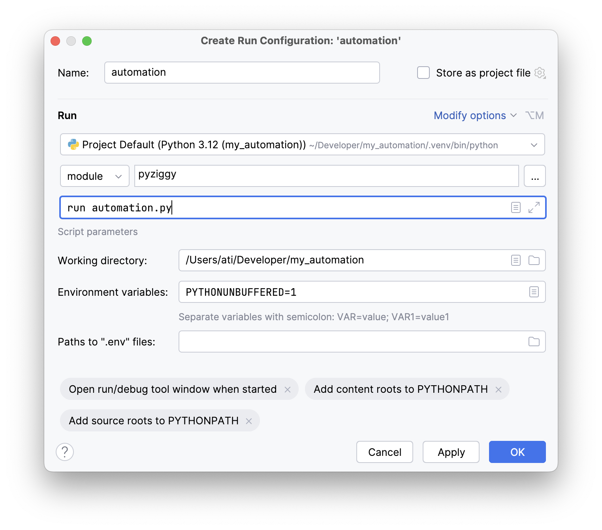
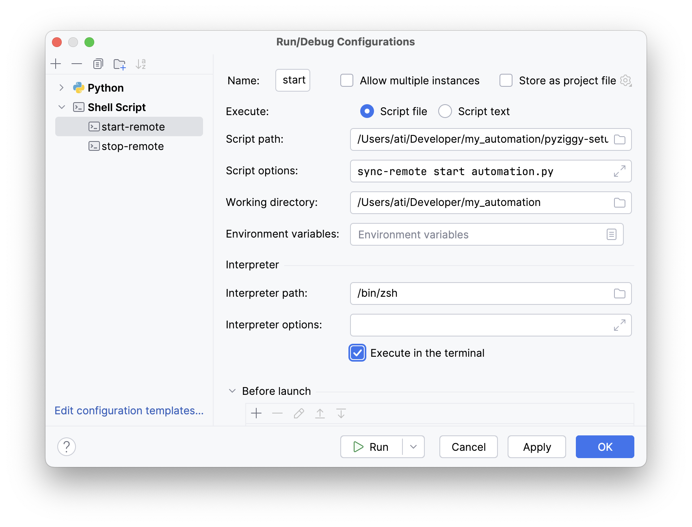

Cookbook¶
Recipes for building automations¶
The following are simple examples for typical use-cases. They assume an automation project set up in the way laid out in the minimal automation project section.
Debugging your automation¶
This recipe also assumes, that pyziggy has been installed in the virtual environment under my_automation/.venv.
Open my_automation in PyCharm. It should detect the .venv subdirectory and automatically configure your environment.
Open the my_automation.py file from the project pane, right click in its editor window, and select “Modify Run Configuration…”. Provide the following details

Now you can press the debug button in PyCharm, and it should stop at breakpoints.
Bind a light to a switch and run indefinitely¶
The full contents of automation.py for such a task would be as follows.
from pyziggy_autogenerate.available_devices import AvailableDevices
devices = AvailableDevices()
def switch_handler():
action_type = devices.ikea_remote.action.enum_type
action = devices.ikea_remote.action.get_enum_value()
if action == action_type.on:
devices.kitchen_light.state.set(1)
elif action == action_type.off:
devices.kitchen_light.state.set(0)
devices.ikea_remote.action.add_listener(switch_handler)
The pyziggy run automation.py command runs indefinitely by default. You can terminate it with the SIGINT signal, i.e. by pressing CTLR+C when running in a terminal.
Side note: This example demonstrates how to use an enum parameter in a type safe way. For more on this, see
Side note: pyziggy treats enum parameters with the name action a little differently, but you don’t have to do anything about this. For more on this topic, see
Turn on a light and exit immediately¶
The full contents of automation.py for such a task would be as follows.
from pyziggy.message_loop import message_loop
from pyziggy_autogenerate.available_devices import AvailableDevices
devices = AvailableDevices()
def turn_on_and_exit():
devices.kitchen_light.state.set(1)
message_loop.stop_after_a_second()
devices.on_connect.add_listener(turn_on_and_exit)
Since this script unconditionally changes parameters, and doesn’t care about any state in the system, it is a perfect candidate for using the --no_startup_query argument. For more about this, see the Command-line-reference.
Note the call to pyziggy.message_loop.MessageLoop.stop_after_a_second() as opposed to calling pyziggy.message_loop.MessageLoop.stop(). This is necessary, because stop() would immediately exit the message loop, and the pyziggy wouldn’t have a chance to send the MQTT messages for the light.
Side note: For more on this behaviour, see
Execute a series of operations at timed intervals, then exit¶
The full contents of automation.py for such a task would be as follows.
from typing import override
from pyziggy.message_loop import message_loop
from pyziggy.util import TimedRunner
from pyziggy_autogenerate.available_devices import AvailableDevices
devices = AvailableDevices()
class MyTasks(TimedRunner):
@override
def run(self):
if self.wait(1):
devices.kitchen_light.brightness.set_normalized(1)
devices.kitchen_light.color_temp.set(454)
if self.wait(1):
devices.kitchen_light.state.set(1)
if self.wait(1):
devices.kitchen_light.state.set(0)
if self.wait(1):
devices.kitchen_light.color_temp.set(179)
if self.wait(1):
devices.kitchen_light.state.set(1)
if self.wait(1):
devices.kitchen_light.color_temp.set(255)
message_loop.stop_after_a_second()
_ = MyTasks(devices)
Since this script unconditionally changes parameters, and doesn’t care about any state in the system, it is a perfect candidate for using the --no_startup_query argument. For more about this, see the Command-line-reference.
For more on the utility class, see
Launch a webserver that exposes automation functions¶
Pyziggy has a Flask integration and the pyziggy run automation.py command will automatically pick up a Flask object, and start listening on the port defined in config.toml.
It’s all straightforward by-the-book Flask, you only need to take care of the synchronization with the message_loop. This is demonstrated in the recipe below.
The full contents of automation.py for such a task would be as follows.
from flask import Flask, request
from pyziggy_autogenerate.available_devices import AvailableDevices
devices = AvailableDevices()
def turn_off_all_lights():
for device in devices.get_devices():
if isinstance(device, LightWithDimming):
device.state.set(0)
app = Flask(__name__)
def http_message_handler(payload):
if "action" in payload:
action = payload["action"]
if action == "turn_off_all_lights":
turn_off_all_lights()
@app.route("/pyziggy")
def http_pyziggy_help():
commands = [
{"action": "turn_off_all_lights"},
]
html = make_html("Send commands to <code>/pyziggy/post</code>.", commands)
return html, 200
@app.route("/pyziggy/post", methods=["POST"])
def http_pyziggy_post():
payload = request.get_json()
def message_callback():
http_message_handler(payload)
message_loop.post_message(message_callback)
return "", 200
I omitted the make_html function, but you can see it in the complete automation project example at https://github.com/bebump/pyziggy-example.
With a POST endpoint exposed, like above, it’s very easy to trigger pyziggy automation functions with tools such as iOS Shortcuts, which also makes them easy to trigger using Siri voice commands.
Create a self-contained, executable script¶
Until now, all examples used the pyziggy run automation.py command. This recipe shows how to create a single .py script that you can execute directly.
The downside of this approach is, that it doesn’t connect to MQTT prior to launching your automation and doesn’t regenerate the AvailableDevices type, so it can contain out-of-date information. Because of this, I don’t recommend this, but it can be done.
The full contents of automation.py for such a task would be as follows.
from pyziggy import PyziggyConfig
from pyziggy.run import run_command
from pyziggy_autogenerate.available_devices import AvailableDevices
devices = AvailableDevices()
config = PyziggyConfig.load("config.toml")
assert config is not None
run_command(devices, config)
You can now execute this script directly with python automation.py.
Working with the pyziggy-setup script¶
Warning
The script makes changes to the directory it’s in. Not the current working directory. And I might change this behavior in future versions, so use this script at your own peril.
Set up a project directory with a .venv directory and pyziggy installed¶
We’ll create a new project in the my_automation directory. This requires that pyenv is installed on your system.
mkdir my_automation
cd my_automation
The next block downloads the pyziggy-setup script into my_automation, downloads an appropriate version using pyenv, creates a .venv subdirectory, and installs pyziggy in it.
curl -fsSL https://raw.githubusercontent.com/bebump/pyziggy/refs/heads/main/util/pyziggy-setup -o pyziggy-setup
chmod u+x pyziggy-setup
./pyziggy-setup setup
You can now activate the virtual environment, and create your pyziggy project
source .venv/bin/activate
pyziggy run automation.py
Automatically deploy a project to a remote machine and run it as a service¶
Warning
This feature is currently supported on MacOS only.
This recipe assumes
with the addition, that the
pyziggy-setupscript has also been placed in the project directory,and the
remote.jsonfile also added to the project directory (see below),and a
requirements.txtalso added to your project directory, containing all required dependencies, includingpyziggy,a remote machine with the project machine’s SSH key added to its
authorized_keys,rsync 3.2.0 or greater installed on the project machine, and
pyenv installed on the remote machine.
To download the default remote.json, issue
curl -fsSL https://raw.githubusercontent.com/bebump/pyziggy/refs/heads/main/util/remote.json -o remote.json
and then edit it, so that it points to your remote machine. Alternatively, here’s the full contents of the default remote.json
{
"ssh_host": "192.168.1.56",
"ssh_user": "home_automation",
"ssh_remote_dir": "~/pyziggy_automation"
}
The ssh_remote_dir is the directory where the project will be uploaded. The pyziggy-setup script will automatically create this directory if it doesn’t exist.
At this point this is what your project directory should look like
my_automation/
├─ pyziggy_autogenerate/
│ └─ available_devices.py
├─ automation.py
├─ config.toml
├─ pyziggy-setup
├─ remote.json
└─ requirements.txt
You can now issue
./pyziggy-setup sync-remote start automation.py
This command will
Create the
pyziggy_automationdirectory under thehome_automationuser, if it doesn’t exist.Use rsync to upload the contents of your project directory to
pyziggy_automation.Create a virtual environment under
~/pyziggy_automation/.venvand install~/pyziggy_automation/requirements.txtinto it.Stops and uninstalls any currently running
net.bebump.pyziggyservices.Verifies that your new project installation can be launched.
Installs a new
net.bebump.pyziggyservice, and launches it.
If at any point the script encounters an error condition, it exits with 1. The logs written by the service are redirected to /tmp/net.bebump.pyziggy/stdout.log and /tmp/net.bebump.pyziggy/stderr.log.
Stop the service running on the remote¶
Warning
This command will overwrite the contents in your local project directory, with contents in the remote service directory. If you don’t trust the state of the remote service directory, use something like git to avoid data loss. .gitignore files are respected and contents of the .git directory aren’t overwritten.
Warning
This feature is currently supported on MacOS only.
See the previous section. Assuming a remote.json file with the correct values, run
./pyziggy-setup sync-remote stop
This command will
Use rsync to download the contents from the remote directory into your local your project directory, overwriting anything.
Stops and uninstalls any currently running
net.bebump.pyziggyservices on the remote.
Running pyziggy-setup from PyCharm¶
Pretty obvious, but all of these commands can be added as run configrations to PyCharm.
This is what my PyCharm project configuration looks like. I’m only showing the sync-remote start pane, the rest should be obvious based on the earlier sections.
